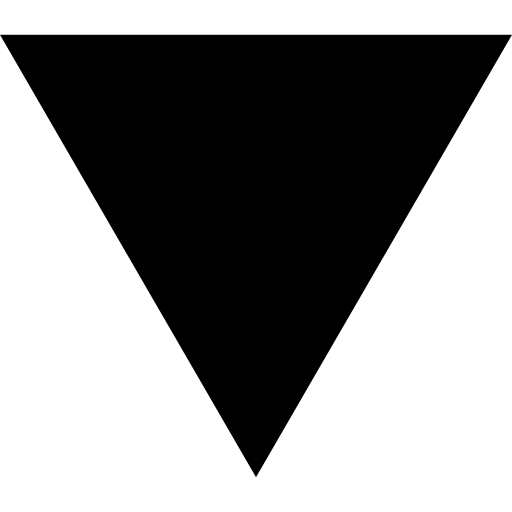

Toma una hebra de tu pelo limpio y presion
tus dedos por la hebra, deslizándolos de raíz a
punta, sientes la hebra suave ¿cierto?
Ahora toca la misma hebra en sentido contrario
(de punta a raíz), ¿Cómo lo sientes?
Lo siento igual de suave
Lo siento un poco aspero
Lo siento aspero
45% completado
